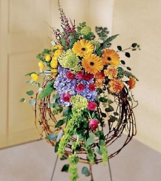

For More Information, or to make a memorial donation, please contact our office at:
12400 W. Overland Road,
Suite #100
Boise ID 83709
To ensure all hospice patients are able to die with dignity, free of pain, in the setting they choose.
This is a charitable fund created for the purpose of receiving memorial donations in honor of someone who has passed away. All gifts received are tax-deductible and help fulfill our mission of caring for others.
Part of the pain of losing someone close to you comes in realizing they are gone from your life forever. How will you fill the void they have left behind? How will you keep their memory alive?
Leaving a gift in honor of a loved one provides a lasting memorial that will survive for years to come.
All gifts received by A Better Way Memorial Fund will be used for charitable purposes. We want to ensure that all people who need hospice care will be able to receive hospice care, regardless of their ability to pay.
In Lieu of Flowers: When planning for a funeral, there is an opportunity to ask friends and family for charitable gifts in lieu of flowers. This can be done on an individual basis when speaking with friends and family, or it can be included as part of an obituary. A gift to A Better Way Memorial Fund will help those patients who need hospice care, but who may not be able to afford everything needed to ensure their comfort as they live out their remaining days. 
We know the first year after a loved one passes away is difficult for those of us left behind. Anniversaries, birthdays and holidays tend to be the most difficult days. It is common for memorial gifts to be made on the loved one’s birthday, anniversary, or their favorite holiday. This can be a one-time donation, or many people set up annual gifts on a specific date to honor their loved one each and every year. Both types of donations are deeply appreciated. If you would like to discuss your options, please do not hesitate to contact someone at A Better Way Memorial Fund. We are happy to help you with this process.
One of the long range goals of A Better Way Memorial Fund is to build a residential hospice facility in the Treasure Valley. There is only one residential hospice facility in the entire state of Idaho, and it is located in Post Falls.
Currently, if a terminally ill patient does not want to die at home, the only choice they have is to die in a Skilled Nursing Facility or in a Hospital. Neither of these have a home-like setting, nor are they geared toward hospice patients and their unique needs, as well as the needs of the family.
As we work with members of this community to make our dream a reality, we welcome the assistance of anyone interested in getting involved. There are many ways to contribute your time, talents, and/or resources. If you would like to join us, please contact A Better Way Memorial Fund at (208) 322- 4663.